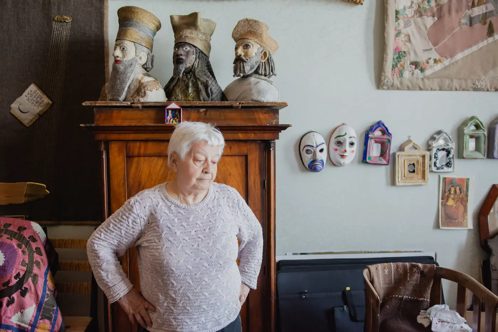

Санкт-Петербург · художник
Художник театра и кино, живописец, график. Эскизы к двадцати пяти фильмам, десятки драматических, балетных и оперных спектаклей, работы в технике лоскутного шитья. Обладатель золотой медали Российской академии художеств, дважды лауреат театральной премии «Золотой софит», лауреат Специальной премии «Золотая маска» (2020).

Родилась 28 февраля 1938 года в Ленинграде. Рисует с двух лет. В 1959 году окончила театрально-постановочный факультет Ленинградского института театра, музыки и кинематографа — класс Николая Павловича Акимова, с которым потом работала в Ленинградском театре комедии.
Выросла в Эрмитаже: мать была экскурсоводом музея. Дед — из семьи богомазов и золотильщиков церковных куполов, отец — художник-живописец Цолак Азизян. Училась одновременно с Сергеем Юрским, Алисой Фрейндлих и Алексеем Германом-старшим: «у нас была фантастическая компания — послевоенное поколение».
В качестве художницы-постановщицы сотрудничала с Надеждой Кошеверовой, Ильёй Авербахом, Георгием Дитятковским, Львом Долиным, Андреем Хржановским. Оформляла спектакли в БДТ, Александринском театре, Малом драматическом театре — Театре Европы, театре имени Комиссаржевской; балеты и оперы Большого театра, постановки Бориса Эйфмана и «Хореографических миниатюр».
Автор графических и живописных работ, произведений прикладного искусства, текстильных коллажей и лоскутных панно. Участник выставок с 1959 года; в 1994–2012 годах состоялось около пятнадцати персональных выставок. Инициатор ежегодных Рождественских вечеров в Музее Анны Ахматовой в Фонтанном доме. Работы находятся в частных коллекциях и музеях.
Живёт и работает в Петербурге; почти сорок лет назад купила дом в деревне Заозерье в Новгородской области — «вторую обитель», которой посвятила выставку «Вот моя деревня» (2017).
«Когда художник рисует, рука может чуть-чуть сдвинуться в сторону. Человек вздохнул — и линия вдруг получается неожиданной. Ты идёшь по тропинке, которая сама случайно тебя куда-то ведёт.«Санкт-Петербургские ведомости», 9 августа 2024
Этюды, наброски и листы, которые живут на столе и на стенах мастерской. Марина Цолаковна любит реалистическую живопись и сравнивает работу с ежедневными гаммами: «Живопись должна быть чёткой, ровной, правильной, красивой. Навык важно поддерживать».
«Меня, как ничего на свете, успокаивает шитье». Панно с зашитыми в ткань строками и блёстками, шерстяные нитки, куклы перед тёмным тканевым панно — «по-настоящему женское занятие», которое приходится себе «покупать» временем.
Площадь, толпа, красный занавес, плакат и спираль из тел — рисованные декорации к анимационному фильму, над которым художница работала вместе с режиссёром.
Листы рваной бумаги с профилями, головными уборами и подписями от руки — графический дневник персонажей. Тот же метод работы, что и в театре: сначала прочитать, потом нарисовать.
Родилась в Ленинграде, в семье художника-живописца Цолака Азизяна и искусствоведа Анастасии Соколовой. Детство пришлось на военные годы, частично — в блокадном городе.
Окончила театрально-постановочный факультет Ленинградского института театра, музыки и кинематографии — класс Николая Павловича Акимова; первые годы работала вместе с учителем в Ленинградском театре комедии.
«Каин XVIII» (реж. Н. Кошеверова) — дебют на «Ленфильме». За тридцать с лишним лет работы со студией оформила двадцать пять фильмов, многие вошли в золотой фонд отечественного кино: «Старая, старая сказка» (1968), «Монолог» (1972), «Синяя птица» (1976, первый советско-американский фильм; Элизабет Тейлор отвергла английского костюмника и приняла эскизы Азизян — и даже предлагала ей стать её личным дизайнером), «Обрыв» (1983), «Гость» (1987).
Десятки драматических, балетных и оперных спектаклей: БДТ, Александринский театр, МДТ — Театр Европы, театр им. Комиссаржевской; «Лебединое озеро» и «Богема» в Большом театре, постановки Бориса Эйфмана и «Хореографических миниатюр».
Около пятнадцати персональных выставок — в Эрмитаже, Музее театрального и музыкального искусства, Музее Бахрушина, Музее Анны Ахматовой, в Германии и Италии. Инициатор и куратор «Рождественских вечеров» в Фонтанном доме.
Премия «Золотой софит» за сценографию «Федры» и «Двенадцатой ночи» в БДТ; лауреат премии дважды, обладатель золотой медали Российской академии художеств.
«Полторы комнаты, или Сентиментальное путешествие на родину» — фильм Андрея Хржановского о Иосифе Бродском, снова с эскизами Азизян.
Выставка «Вот моя деревня» в галерее «Борей» — дому в Заозерье под Новгородом, который художница называет «второй обителью».
Персональная выставка эскизов «Заговор „не таких“» в Музее театрального и музыкального искусства, к восьмидесятилетию художницы.
«Нос, или Заговор „не таких“» — анимационный фильм Андрея Хржановского по мотивам оперы Шостаковича, над которым Азизян работала много лет. В том же году — Специальная премия «Золотая маска» «За выдающийся вклад в развитие театрального искусства».
«Для работы нужна тишина» — большое интервью в «Санкт-Петербургских ведомостях».
«Тур по мастерским» — репортаж о квартире-мастерской на набережной, фото Ирины Ивановой («Культура Петербурга»).
«Очень личное» с Виктором Лошаком — интервью на ОТР.
«Ленфильм» поздравляет Марину Азизян с 85-летием — о двадцати пяти фильмах студии и о платье для Элизабет Тейлор, которое актриса приняла безоговорочно.
Специальная премия «Золотая маска» «За выдающийся вклад в развитие театрального искусства»; премьера «Носа, или Заговора „не таких“».
Выставка «Заговор „не таких“» в Музее театрального и музыкального искусства — сотни эскизов к фильму показаны как самостоятельные работы.
Страница художницы в социальных сетях, где показываются новые работы и анонсы выставок.
По вопросам выставок, приобретений и сотрудничества — через страницу в Facebook.